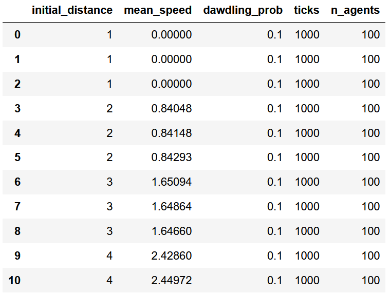

Ein kurzer Blick auf Pandas
Contents
Ein kurzer Blick auf Pandas#
Spätestens bei der Durchführung von Simulationsexperimenten, dem systematischen Vergleich desselben Simulationsmodells mit jeweils unterschiedlichen Parametereinstellungen, macht es großen Sinn, die produzierten Daten als einen schön strukturierten, tabellförmigen Datensatz abzuspeichern - ein klassischer Datensatz also, wie man ihn vielleicht aus der Statistik kennt, mit Variablen in den Spalten und Beobachtungsfällen in den Zeilen. Das erleichtert uns nicht nur die Aufbereitung und Auswertung der Daten in Python, sondern ermöglicht uns auch das langfristige Speichern, den Export aus Python heraus und einen eventuellen Import der Daten in ein Statistik-Programm unserer Wahl, wie R, Stata, SPSS oder Excel. Unten siehst du ein Beispiel dafür, wie ein solcher “tabellenförmiger” Datensatz aussehen kann:

In Python gibt es für das Erstellen, Aufbereiten und Auswerten solcher tabellenförmiger Datensätze das Paket Pandas. Pandas gehört zu DEN grundlegenden Paketen für das wissenschaftliche Arbeiten mit Python, an dem man wirklich nicht vorbeikommt, wenn man Python für irgendwelche wissenschaftlichen Zwecke nutzen möchte. Der primäre Objekt-Typ, den uns Pandas liefert, ist der sogenannte Dataframe. Das ist eben genau ein solcher, tabellenförmiger Datensatz, wie man in der obigen Abbildung sieht.
Zur Info
Pandas kannst du wie gewohnt über den Anaconda-Navigator installieren. Beim Import von Pandas hat sich die Abkürzung pd etabliert: import pandas as pd
Wir schauen uns im Folgenden v.a. an, wie wir einen solchen Dataframe mit den Daten unserer Simulationsexperimente erstellen und auf der Festplatte abspeichern, sodass man alle weiteren Aufbereitungen und Auswertungen mit einem beliebigen Statistikprogramm vollziehen kann. Für einfache grafische Auswertungen direkt in Python werfen wir lediglich einen ganz kurzen Blick auf das Paket Seaborn.
Pro-Tipp
Pandas kann man sich ein kleines bisschen wie eine Form von R in Python vorstellen, das alle Arten von data wrangling ermöglicht. Wir schauen uns hier jedoch nur einen kleinen Bruchteil der Funktionalität von Pandas an. Für eine tiefergehende Einführung in Pandas schau doch z.B. mal hier oder hier.
Dataframe erstellen#
Bei der Durchführung von Simulationsexperimenten macht es Sinn, die Daten zunächst in einfachen Datenstrukturen wie Listen oder (noch besser) Dictionaries zu sammeln und dann nach dem Simulationsexperiment die gesammelten Daten in einen Dataframe zu überführen. Für die Erstellung von Dataframes aus Datentypen wie Listen oder Dictionaries gibt es in Pandas zahlreiche Möglichkeiten. Wir schauen uns nun zwei davon mit Beispieldaten an. Stell dir am besten vor, dass die Daten zuvor innerhalb einer Simulation bzw. eines Simulationsexperimentes gesammelt wurden und nun zur besseren Handhabung in einen Dataframe überführt werden sollen.
Möglichkeit 1 - Dataframe aus einem Dictionary mit Listen erstellen#
Bei dieser Variante einen Dataframe zu erstellen, liegen die Daten in Form eines Dictionaries, das in jedem seiner Einträge eine Datenreihe in Form einer Liste aufweist. Absolut wichtig ist dabei, dass alle Datenreihen die gleiche Länge haben! Unten siehst du ein Beispiel eines solchen Dictionaries mit zwei Einträgen d.h. zwei Datenreihen (wie immer ist es natürlich so, dass wir in der Praxis die Daten nicht so wie hier per Hand als Python-Code eintippen, sondern diese - wie gessagt - z.B. innerhalb eines Simulationsexperimentes automatisch erstellt und ausgegeben werden):
data_dict = {
"density": [1.0, 0.5, 0.33, 0.25, 0.2, 0.1],
"speed" : [0.0, 1.0, 2.0, 3.0, 4.0, 5.0],
}
Um aus dem obigen Dictionary einen Dataframe zu erstellen, muss man nichts anderes tun als das Dictionary in den Dataframe-Konstruktor pd.DataFrame() (Achtung: großes “F”!) einzugeben und den entstehenden Dataframe am besten in einer Variable zu speichern. Unten erstelle ich den Dataframe aus den obigen Daten und speichere diesen dann in der Variable df:
import pandas as pd
df = pd.DataFrame(data_dict)
Jetzt schaue ich mir den unter df gespeicherten Dataframe an:
df
| density | speed | |
|---|---|---|
| 0 | 1.00 | 0.0 |
| 1 | 0.50 | 1.0 |
| 2 | 0.33 | 2.0 |
| 3 | 0.25 | 3.0 |
| 4 | 0.20 | 4.0 |
| 5 | 0.10 | 5.0 |
Wir sehen: das Dictionary wurde in einen tabellenförmige Datensatz umgewandelt. Jede Liste/Datenreihe, die als Eintrag im obigen Dictionary data_dict vorlag, wurde in eine Spalte des Dataframes überführt. Man kann sagen, dass wir mit dieser Methode den Dataframe spaltenweise erstellen können.
Möglichkeit 2 - Dataframe aus einer Liste mit Dictionaries erstellen#
Wir haben eben den Dataframe aus einem Dictionary mit Listen spaltenweise erstellt. Nun schauen wir uns an, wie man einen Dataframe zeilenweise aus einer Liste mit Dictionaries erstellt. Dieses Vorgehen eignet sich (meiner Ansicht nach) besonders gut, um im Rahmen von Simulationsexperimenten die Daten zunächst über verschiedene Modelle hinweg zu sammeln und dann zu einem Dataframe zusammenzusetzen. Tatsächlich ändert sich nun nur die Struktur, in der wir die Daten vor der Erstellung des Dataframes vorliegen haben, die Erstellung des Dataframes durch Pandas bleibt exakt gleich.
Unten siehst du beispielhaft, wie eine solche Liste mit Dictionaries aussehen kann. Wir haben eine Liste, die Dictionaries enthält. Jedes Dictionary enthält die Daten eines “Falles” und entspricht somit im Dataframe einer Zeile. Jeder Eintrag eines Dictionary wird anhand des Dictionary-Keys einer Spalte zugewiesen.
data_dicts = [
{"density": 1.0, "speed": 0.0},
{"density": 0.5, "speed": 1.0},
{"density": 0.33, "speed": 2.0},
{"density": 0.25, "speed": 3.0},
{"density": 0.2, "speed": 4.0},
{"density": 0.1, "speed": 5.0},
]
Die obige Struktur ist praktisch, weil wir so für jeden Fall die Daten kompakt und verständlich in einem einzigen Paket(einem Dictionary) vorliegen haben und die Daten für einen Fall nicht wie in Möglichkeit 1 über mehrere Liste verteilt sind. Das erleichtert uns u.a. das Sammeln der Daten für einzelne Beobachtungsfälle. Stell dir vor, wir führen mehrere Simulationsmodelle mittels For-Loop aus und jedes Modell gibt ein solches Dictionary mit den relevanten Simulationsdaten aus, das in die obige Liste eingefügt wird. Schon haben wir eine solche Datenstruktur vorliegen, welche sodann in einen Dataframe überführt werden kann.
Unten füge ich data_dicts als Input den Dataframe-Konstruktor pd.DataFrame() ein und speichere den entstehenden Dataframe in einer Variable namens df.
df = pd.DataFrame(data_dicts)
df
| density | speed | |
|---|---|---|
| 0 | 1.00 | 0.0 |
| 1 | 0.50 | 1.0 |
| 2 | 0.33 | 2.0 |
| 3 | 0.25 | 3.0 |
| 4 | 0.20 | 4.0 |
| 5 | 0.10 | 5.0 |
Wir sehen: wir haben einen baugleichen Dataframe wie mit Möglichkeit 1 erstellt. Der einzige Unterschied ist, dass die Daten zuvor anders strukturiert vorlagen.
Auf eine Spalte zugreifen#
Wenn wir einen fertigen Dataframe vorliegen haben, dann muss man oft auf einzelne Spalten des Dataframes zugreifen. Wir können einzelne Spalten eines Dataframes auswählen, indem wir - ähnlich wie bei Dictionaries - den Namen der auszuwählenden Spalte in eckige Klammern hinter den Namen des Dataframes schreiben. Allgemein formuliert sieht das dann so aus: DATAFRAME[SPALTE]. Unten greife ich beispielsweise auf die Spalte "density" des Dataframes df zu, welche dadurch ausgegeben wird.
df["density"]
0 1.00
1 0.50
2 0.33
3 0.25
4 0.20
5 0.10
Name: density, dtype: float64
Durch das Auswählen von Spalten können wir diese z.B. als Datenreihe in eine Matplotlib-Funktion eingeben. Häufiger ist aber, dass wir einzelne Spalten auswählen, um diese auf irgendeine Weise zu verändern oder z.B. auch mit anderen Spalten verrechnen.
Übrigens
Wenn du Erfahrung mit R hast, dann erinnert dich das vermutlich gerade daran. Natürlich kann man auch in Pandas nicht nur auf einzelne Spalten, sondern auch auf einzelne Zeilen oder Zellen zugreifen. Auch kann man per Bedingung Teile des Dataframes auswählen bzw. filtern. Schau doch z.B. mal hier für weitere Infos zum Thema “Indizierung von Dataframes”.
Vektorisiertes Rechnen#
Neben vielen weiteren ist ein riesengroßer Vorteil von Dataframes das sogenannte vektorisierte Rechnen. Das bedeutet, dass wir nicht mehr nur einzelne Werte miteinander verrechnen können, sondern ganze Datenreihen auf einmal miteinander verrechnen können. Was das heißt, schauen wir uns am besten direkt an einem Beispiel an. Unten erstelle ich zunächst einen Dataframe mit zwei Spalten namens "einkommen_1" und "einkommen_2".
data_dicts = [
{"einkommen_1": 100, "einkommen_2": 100},
{"einkommen_1": 200, "einkommen_2": 100},
{"einkommen_1": 500, "einkommen_2": 300},
{"einkommen_1": 200, "einkommen_2": 1000},
{"einkommen_1": 50, "einkommen_2": 100},
{"einkommen_1": 400, "einkommen_2": 600},
]
df = pd.DataFrame(data_dicts)
df
| einkommen_1 | einkommen_2 | |
|---|---|---|
| 0 | 100 | 100 |
| 1 | 200 | 100 |
| 2 | 500 | 300 |
| 3 | 200 | 1000 |
| 4 | 50 | 100 |
| 5 | 400 | 600 |
Angenommen wir möchten für jeden Fall (jede Zeile) die Summe aus "einkommen_1" und "einkommen_2" berechnen. In Pandas können wir nun super unkompliziert beide Spalten einfach direkt miteinander verrechnen, sodass für jede Zeile die entsprechende Summe gebildet wird. Wir können nun also die beiden Spalten entlang der Zeilen verrechnen. Unten wähle ich die beiden zu verrechnenden Spalten aus und addiere sie:
df["einkommen_1"] + df["einkommen_2"]
0 200
1 300
2 800
3 1200
4 150
5 1000
dtype: int64
Das Ergebnis ist eine neue Spalte/Datenreihe, welche für jede Zeile der verrechneten Spalten das entsprechende Ergebnis enthält.
Übrigens
Hätten wir die Daten nicht in einem Dataframe, sondern die einzelnen Spalten z.B. als einfache Liste vorliegen gehabt, dann hätten wir diese Listen nicht einfach mit miteinander verrechnen können. Stattdessen hätten wir mittels For-Loop beide Liste durchgehen müssen, die jeweiligen Wertepaare heraussuchen müssen, jeweils einzeln addieren und in eine neue Liste einfügen müssen.
Die beim Verrechnen von Dataframe-Spalten neu entstehende Spalte kann man auch als eine neue Spalte in den Dataframe selbst wieder einfügen. Dafür muss man einen neuen Namen für eine neue Spalte hinter in eckige Klammern hinter den gewünschten Dataframe schreiben und dieser neuen Spalte dann die bei der vektorisierten Berechnung neu entstehende Spalte zuweisen. Unten erstelle ich die neue Spalte df["einkommen_gesamt"] und weise dieser das Ergebnis der Berechnung df["einkommen_1"] + df["einkommen_2"] zu:
df["einkommen_gesamt"] = df["einkommen_1"] + df["einkommen_2"]
Schauen wir uns das Ergebnis an:
df
| einkommen_1 | einkommen_2 | einkommen_gesamt | |
|---|---|---|---|
| 0 | 100 | 100 | 200 |
| 1 | 200 | 100 | 300 |
| 2 | 500 | 300 | 800 |
| 3 | 200 | 1000 | 1200 |
| 4 | 50 | 100 | 150 |
| 5 | 400 | 600 | 1000 |
Das sieht doch super aus und ist wirklich praktisch.
Übrigens: Eine Dataframe-Spalte kann auch mit einem einzelnen Wert verrechnet werden. Unten teile ich beispielsweise die gesamte Spalte df["einkommen_gesamt"] durch den Wert 2 und speichere das Ergebnis in einer neuen Spalte df["halbes_einkommen_gesamt"]:
df["halbes_einkommen_gesamt"] = df["einkommen_gesamt"] / 2
df
| einkommen_1 | einkommen_2 | einkommen_gesamt | halbes_einkommen_gesamt | |
|---|---|---|---|---|
| 0 | 100 | 100 | 200 | 100.0 |
| 1 | 200 | 100 | 300 | 150.0 |
| 2 | 500 | 300 | 800 | 400.0 |
| 3 | 200 | 1000 | 1200 | 600.0 |
| 4 | 50 | 100 | 150 | 75.0 |
| 5 | 400 | 600 | 1000 | 500.0 |
Einen Überblick gewinnen#
Dataframes besitzen verschiedene Methoden bzw. Attribute, um relativ unkompliziert einen Blick auf den Dataframe zu werden und einzelne deskriptive Auswertungen zu machen. Im Folgenden einer kurzer, unkommentierter Überblick über einige ausgewählte Methoden/Attribute/Funktionen:
Anzahl Spalten und Zeilen#
df.shape
(6, 4)
# Die Anzahl der Zeilen eines Dataframes kann auch einfach mit der Funktion len() ermittelt werden
len(df)
6
Eine Liste aller Spalten-Bezeichnungen#
df.columns
Index(['einkommen_1', 'einkommen_2', 'einkommen_gesamt',
'halbes_einkommen_gesamt'],
dtype='object')
Die ersten 5 Zeilen des Dataframes anschauen#
df.head()
| einkommen_1 | einkommen_2 | einkommen_gesamt | halbes_einkommen_gesamt | |
|---|---|---|---|---|
| 0 | 100 | 100 | 200 | 100.0 |
| 1 | 200 | 100 | 300 | 150.0 |
| 2 | 500 | 300 | 800 | 400.0 |
| 3 | 200 | 1000 | 1200 | 600.0 |
| 4 | 50 | 100 | 150 | 75.0 |
Die letzen 5 Zeilen des Dataframes anschauen#
df.tail()
| einkommen_1 | einkommen_2 | einkommen_gesamt | halbes_einkommen_gesamt | |
|---|---|---|---|---|
| 1 | 200 | 100 | 300 | 150.0 |
| 2 | 500 | 300 | 800 | 400.0 |
| 3 | 200 | 1000 | 1200 | 600.0 |
| 4 | 50 | 100 | 150 | 75.0 |
| 5 | 400 | 600 | 1000 | 500.0 |
Häufigkeiten in einer Spalte zählen#
df["einkommen_1"].value_counts()
200 2
50 1
500 1
100 1
400 1
Name: einkommen_1, dtype: int64
Durchschnitt einer Spalte berechnen#
df["einkommen_1"].mean()
241.66666666666666
Minimum und Maximum einer Spalte#
df["einkommen_1"].min()
50
df["einkommen_1"].max()
500
Verschiedene Summary-Statistiken auf einmal#
df.describe()
| einkommen_1 | einkommen_2 | einkommen_gesamt | halbes_einkommen_gesamt | |
|---|---|---|---|---|
| count | 6.000000 | 6.000000 | 6.000000 | 6.000000 |
| mean | 241.666667 | 366.666667 | 608.333333 | 304.166667 |
| std | 174.403746 | 366.969572 | 449.907398 | 224.953699 |
| min | 50.000000 | 100.000000 | 150.000000 | 75.000000 |
| 25% | 125.000000 | 100.000000 | 225.000000 | 112.500000 |
| 50% | 200.000000 | 200.000000 | 550.000000 | 275.000000 |
| 75% | 350.000000 | 525.000000 | 950.000000 | 475.000000 |
| max | 500.000000 | 1000.000000 | 1200.000000 | 600.000000 |
Dataframe exportieren#
Wir können Dataframes u.a. im CSV-Format exportieren. Das ist praktisch, weil wir so nicht nur unsere Daten langfristig auf der Festplatte speichern können, sondern die Daten auch mit einem Statistik-Programm unserer Wahl öffnen und auswerten können. Das bietet sich v.a. in diesem Kurs an, weil wir hier in Python nur ganz oberflächlich Auswertungsmethoden kennenlernen. Falls du also mit einem anderen Statistik-Programm gut zurecht kommst, ist es z.B. denkbar, dass du die in Python gewonnen Simulationsdaten als Dataframe im CSV-Format exportierst und dann die Datenaufbereitung und Auswertung in einem anderen Programm vollziehst (z.B. R oder SPSS).
Für den Export eines Dataframes im CSV-Format gibt es in Pandas die DataFrame-Methode to_csv(). Um einen bestimmten Dataframe zu speichern, muss man die Methode von dem entsprechenden Dataframe aus ausführen und einen Dateipfad/Dateinamen eingeben. Der Dateiname muss auf .csv enden, da wir die Datei im CSV-Format speichern. Unten speichere ich den Dataframe namens df unter dem Namen "simulationsergebnisse.csv" auf meinem Computer. Gibt man keinen weiteren Dateipfad bzw. Ordner an, dann wird die Datei typischerweise dort gespeichert, wo auch das aktuelle Python-Skript liegt.
df.to_csv("simulationsergebnisse.csv")